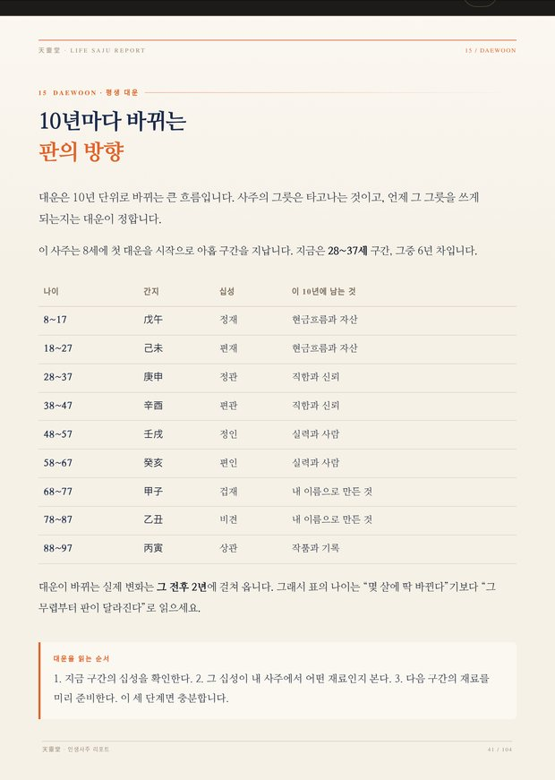
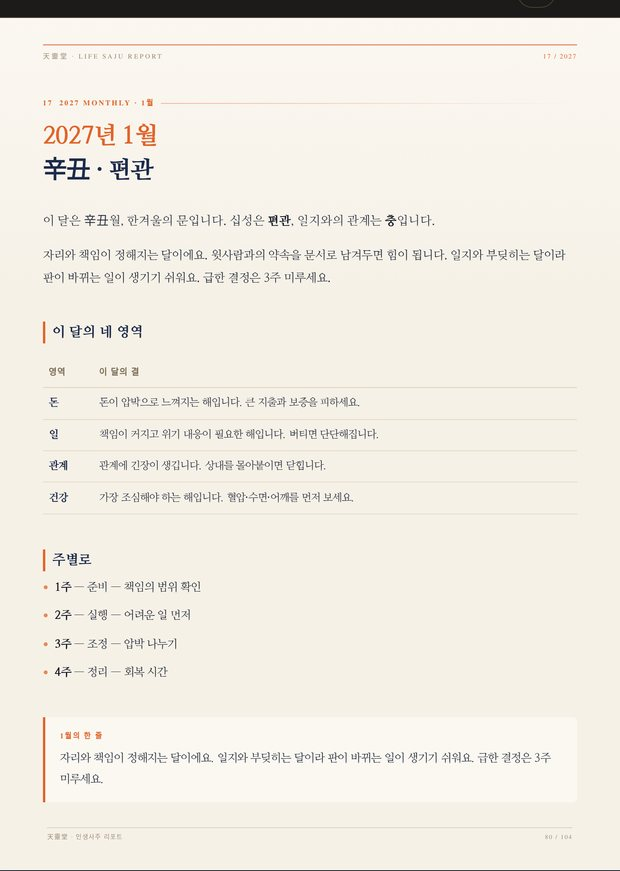

다가오는 한 해,
어느 달에 문이 열리고
무엇을 피해야 할지 보고 가세요
내 정보 입력
인생사주 리포트
타고난 기질부터 인생의 전환점,
재물·직업·사랑·가족·노후까지
원국 검수 후 영업일 2~3일 · 결제는 검수 완료 후 안내
내가 어떤 사람인지,
어떤 인생의 흐름을 타고났는지
한 사람의 평생을 한 권으로
사주는 미래를 정해둔 예언이 아닙니다. 태어난 계절과 여덟 글자에는 그 사람이 어떤 조건에서 힘을 내고, 어떤 상황에서 먼저 지치는지가 적혀 있습니다.
인생사주 리포트는 그 기록 위에 평생의 큰 흐름과 앞으로 10년의 상세한 변화를 얹어 한 사람의 인생 전체를 엮은 프리미엄 리포트입니다. 단순히 ‘올해의 운세’를 알려주는 것이 아니라, 타고난 기질에서 시작해 인생의 전환점, 재물과 직업, 사랑과 가족, 그리고 노후의 자리까지 한 줄로 이어 읽습니다.
리포트 목차
스물두 개의 장 — 무엇을, 어떤 순서로 읽게 되는지
모든 장은 사주 용어를 모르셔도 읽히도록 생활의 말로 적었습니다.
필요한 장부터 펼쳐 보셔도 됩니다 — 1장 총평, 15장 평생 대운, 17장 2027년 12개월은 바로 읽히는 장입니다.
미리보기
실제 리포트에서 세 장



샘플 원국(김서연)으로 만든 실제 페이지입니다.
신청하시면 같은 구성의 프리미엄 리포트로 제작됩니다.
구매 안내
가격 · 제공 방식 · 제작 시간
| 가격 | 테마별 풀이(3,900원)를 결제하셨다면 그 금액을 뺀 35,900원에 받으실 수 있습니다. |
|---|---|
| 제공 방식 | 책자형 PDF 소장본 · 신청 시 입력한 이메일로 발송 |
| 제작 시간 | 원국 검수 후 영업일 2~3일 |
| 결제 | 검수 완료 후 안내드립니다. 검수 전에는 결제가 이루어지지 않습니다. |
| 개인정보 | 이름·생년월일·출생지는 리포트 제작과 발송에만 사용합니다. 신청 내역은 이 기기에만 저장되고 외부로 전송되지 않습니다. |
| 환불 기준 | 제작 착수 전에는 전액 환불, 착수 후에는 진행 단계에 따라 부분 환불됩니다. 완성본을 받으신 뒤에는 디지털 콘텐츠 특성상 환불이 어렵습니다. |
사주명리 상징을 생활의 언어로 옮긴 참고 해석입니다.
의학적 진단·법률·투자 판단을 대신하지 않습니다.
원국 검수 후 영업일 2~3일 · 결제는 검수 완료 후 안내
35,900원으로
인생사주 리포트 받기
방금 보신 사주 정보 그대로 이어집니다. 받으실 이메일만 확인해 주세요.
결제를 마치면 리포트를 바로 펼쳐보고 PDF로 저장하실 수 있습니다.
여덟 글자에 새겨진 하늘의 뜻을,
한 사람의 언어로 옮깁니다.